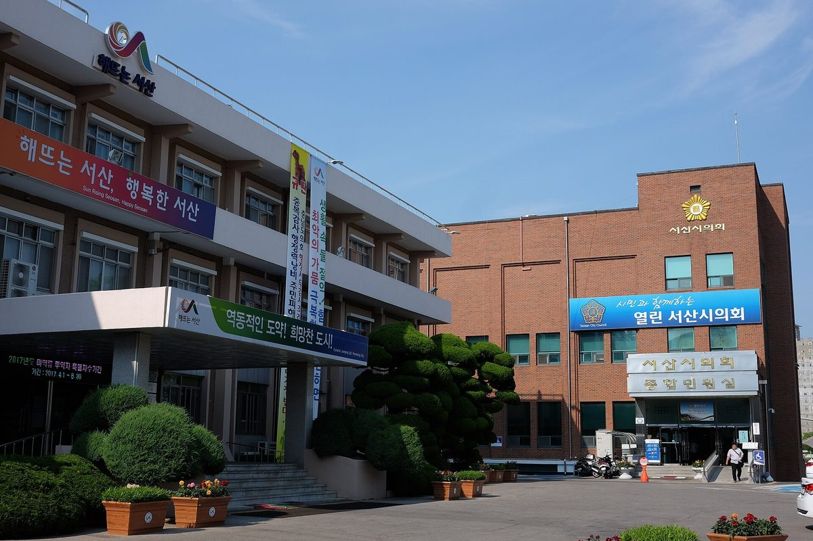

서산 관내 발전용량 68만kW 중 주민 수익 마을발전소는 218kW, 0.03%…시의원 "주민참여·개발이익공유 조례안 준비"

김애란 서산시의원, 첫 시정질문서 주민협동조합 설립 컨설팅·이익 배분 기준 마련에 집행부 협조 요청…조례안은 발의 전 단계, 재생에너지 대목 시 답변은 알려지지 않아
충남 서산시의회 김애란 의원(더불어민주당)이 서산 관내 발전용량 약 68만kW 가운데 주민이 직접 수익을 얻는 마을발전소는 약 218kW로 0.03% 수준에 그친다고 짚으며, 재생에너지 개발 이익을 주민과 나누기 위한 조례안을 준비하고 있다고 밝혔다. 김 의원은 10월 28일 서산시의회 제316회 임시회 제4차 본회의에서 첫 시정질문에 나서 이 수치를 내놓았다. 준비 중인 조례안은 「서산시 재생에너지 주민참여 및 개발이익공유 조례안」으로, 아직 의회에 발의되지 않았다. 김 의원은 발전시설이 늘어나는 만큼 주민 소득도 함께 늘어나는 구조가 필요하다며, 주민협동조합 설립을 돕는 컨설팅과 개발이익 배분 기준 마련에 시 집행부가 협조해 달라고 요청했다. 개발 이익이 사업자에게만 쏠리지 않고 지역 주민에게도 돌아가게 할 제도적 바탕을 만들자는 취지다. 재생에너지 대목에 대한 서산시 집행부의 답변은 알려지지 않았으며, 김 의원은 시정질문 답변이 지켜지는지 행정사무감사와 예산 심사로 살피겠다고 했다.
시민에너지 관점
관내 발전용량과 주민 몫 마을발전소의 차이가 3,000배가 넘는다는 것은, 지역에 발전소가 아무리 늘어도 그 수익이 주민 손에 거의 닿지 않고 있다는 뜻이다. 주민에게는 발전소를 세울 돈도 전문성도 없다는 반론이 나올 수 있지만, 그래서 협동조합 설립 컨설팅과 이익 배분 기준을 조례로 정해 두자는 것이고, 제도가 길을 열어 주면 주민도 출자자가 될 수 있다. 주민이 발전소의 주인이 되어야 수익이 지역에 머물고, 발전시설을 둘러싼 갈등도 '우리 발전소'에 대한 동의로 바뀐다. 서산시 집행부는 이 제안에 대한 입장을 밝히고, 조례안이 발의되면 시민들이 논의 과정에 직접 의견을 내야 한다.
출처: 중도일보 2026-10-29 임붕순 원문 보기
출처: 뉴스티앤티 2026-10-31 이용환 원문 보기
瑞山市内の発電容量68万kWのうち住民が収益を得る村の発電所は218kW、0.03%…市議「住民参加・開発利益共有条例案を準備」
キム・エラン瑞山市議、初の市政質問で住民協同組合設立のコンサルティングと利益配分基準づくりへの協力を執行部に要請…条例案は発議前の段階、再生可能エネルギー部分への市の答弁は伝えられず
韓国・忠清南道瑞山（ソサン）市議会のキム・エラン議員（共に民主党）は、市内の発電容量約68万kWのうち、住民が直接収益を得る村の発電所は約218kWで0.03%にとどまると指摘し、再生可能エネルギー開発の利益を住民と分かち合うための条例案を準備していると明らかにした。キム議員は10月28日、瑞山市議会第316回臨時会第4次本会議で初めての市政質問に立ち、この数字を示した。準備中の条例案は「瑞山市再生可能エネルギー住民参加および開発利益共有条例案」で、まだ議会に発議されていない。キム議員は、発電施設が増えるのに合わせて住民の所得も増える仕組みが必要だとして、住民協同組合の設立を支えるコンサルティングと開発利益の配分基準づくりに市の執行部が協力するよう求めた。開発利益が事業者だけに集中せず、地域住民にも還元されるよう制度的な土台をつくろうという趣旨だ。再生可能エネルギー部分に対する瑞山市執行部の答弁は伝えられておらず、キム議員は市政質問への答弁が守られるかどうかを行政事務監査と予算審査で確かめると述べた。
市民エネルギーの視点
市内の発電容量と住民の取り分である村の発電所との差が3,000倍を超えるということは、地域に発電所がいくら増えても、その収益が住民の手にほとんど届いていないことを意味する。住民には発電所を建てる資金も専門性もないという反論もありうるが、だからこそ協同組合設立のコンサルティングと利益配分の基準を条例で定めておこうというのであり、制度が道を開けば住民も出資者になれる。住民が発電所の主人になってこそ収益が地域にとどまり、発電施設をめぐる対立も「自分たちの発電所」への同意に変わる。瑞山市の執行部はこの提案への立場を明らかにし、条例案が発議されれば市民が議論の過程に直接意見を出すべきだ。
出典: 中都日報 2026-10-29 イム・ブンスン 原文を読む
出典: ニュースTNT 2026-10-31 イ・ヨンファン 原文を読む
瑞山市辖区发电容量68万kW中居民获益的村级电站仅218kW，占0.03%…市议员称"正在准备居民参与与开发收益共享条例草案"
瑞山市议员Kim Ae-ran（김애란）在首次市政质询中请求执行部门协助提供居民合作社设立咨询、制定收益分配标准…条例草案尚未提出，市方对可再生能源部分的答复未见报道
韩国忠清南道瑞山市议会议员Kim Ae-ran（김애란，共同民主党）指出，瑞山市辖区内发电容量约68万kW，其中居民能直接获得收益的村级电站仅约218kW，只占0.03%左右，并表示正在准备一项让居民分享可再生能源开发收益的条例草案。Kim议员于10月28日在瑞山市议会第316届临时会第4次全体会议上首次进行市政质询时提出了上述数字。她正在准备的是《瑞山市可再生能源居民参与及开发收益共享条例草案》，目前尚未向议会提出。Kim议员表示，需要建立随着发电设施增加、居民收入也一同增加的机制，并请求市执行部门在提供居民合作社设立咨询、制定开发收益分配标准等方面给予协助。其用意是建立制度基础，使开发收益不只集中于开发商，也能回流到当地居民手中。瑞山市执行部门对可再生能源部分的答复未见报道，Kim议员表示将通过行政事务监察和预算审议检查市政质询的答复是否得到落实。
市民能源视角
辖区发电容量与居民所有的村级电站相差3,000倍以上，说明无论当地新建多少电站，收益几乎都没有落到居民手中。有人可能会说居民既没有建电站的资金，也没有专业能力，但正因如此，才要用条例事先规定合作社设立咨询和收益分配标准；只要制度打开通道，居民也能成为出资人。只有居民成为电站的主人，收益才能留在当地，围绕发电设施的矛盾也会转变为对"我们的电站"的认同。瑞山市执行部门应表明对这一提议的立场；条例草案一旦提出，市民应直接参与讨论、发表意见。
来源: 中都日报 2026-10-29 임붕순（Im Bung-sun） 查看原文
来源: News TNT 2026-10-31 이용환（Lee Yong-hwan） 查看原文
Only 218 kW, or 0.03%, of Seosan's 680,000 kW generating capacity is in resident-owned village plants; councillor preparing benefit-sharing ordinance
In her first questioning session, Seosan city councillor Kim Ae-ran asked the city to support consulting for resident cooperatives and set rules for sharing development profits; the draft has not yet been introduced, and no city reply on the energy point has been reported
Kim Ae-ran, a Democratic Party member of the city council in Seosan, South Chungcheong Province, said that of the roughly 680,000 kW of generating capacity in the city, village power plants that pay residents directly account for only about 218 kW, or around 0.03%, and that she is preparing an ordinance to share the profits of renewable energy development with residents. She presented the figures on October 28 in her first questioning of the city administration, at the fourth plenary session of the council's 316th extraordinary session. The draft, titled the Seosan City Ordinance on Resident Participation in Renewable Energy and Sharing of Development Profits, has not yet been introduced in the council. Kim said the city needs a structure in which residents' incomes grow as generating facilities expand, and asked the administration to cooperate by funding consulting for setting up resident cooperatives and by drawing up standards for distributing development profits. The aim is to lay an institutional foundation so that the gains from renewable energy development do not go only to developers but also reach local residents. No reply from the Seosan administration on the renewable energy point has been reported, and Kim said she would check through administrative audits and budget reviews whether the answers given in the session are kept.
Citizen Energy View
A gap of more than 3,000 times between the city's generating capacity and the village plants owned by residents means that however many power plants are built locally, almost none of the income reaches residents. Some will argue that residents lack the money and expertise to build power plants, but that is exactly why cooperative-formation consulting and profit-sharing rules should be written into an ordinance; once the rules open the door, residents can become investors. Only when residents own the plants does the income stay in the community, and disputes over generating facilities can turn into consent for "our own plant." The Seosan administration should state its position on the proposal, and once the draft is introduced, citizens should take part directly in the debate.
Source: Joongdo Ilbo 2026-10-29 Im Bung-sun Read the original
Source: News TNT 2026-10-31 Lee Yong-hwan Read the original